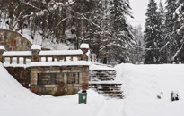
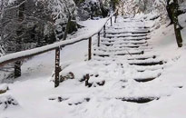
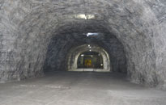

Atractii turistice

Statiunea Slanic Moldova este renumita pentru izvoarele sale de ape carbonate, bicarbonatate, usor sulfuroase, clorate, sodice, hipertonice, hipotonice si oligominerale, izvoare descoperite inca din anul 1801. In 1852 s-au efectuat primele teste chimice, iar in 1877 au aparut primele instalatii balneare. De-a lungul timpului, calitatile apelor minerale descoperite aici au fost confirmate prin medaliile obtinute la expozitiile internationale de la Paris, Viena, Frankfurt/Main etc. Specialistii le-au comparat cu apele minerale de la Karlovy Vary, Vichy, Aix-les-Bains etc.
Botezata “Perla Moldovei“, Slanic Moldova asigura tratament pentru tulburari digestive (gastrite cronice hipo- si hiperacide, ulcere gastrice si duodenale, la un interval de cel putin 3 ani de la faza dureroasa, afectiuni stomacale postchirurgicale, colite cronice atipice, colon inflamabil, constipatie cronica), boli hepatobiliare (dischinezie biliara, colicistita cronica cu sau fara calculi, stari postoperatorii in boli ale ficatului), boli metabolice si nutritionale (diabet melitus, forme usoare si intermediare, obezitate), boli ale rinichiului si urinare (stari de dupa tratamentul infectiilor urinare, acolo unde nu au existat leziuni sau dereglari renale).

„Traseul 300 de scari” este cunoscut si ca „Traseul 5” si reprezinta de fapt o plimbare prin padurile de la poalele muntelui Dobru, deasupra zonei izvoarelor minerale din Slanic Moldova si de-a lungul Cheilor Slanicului. Fiind destinat relaxarii active a turistilor, traseul „300 de scari” nu necesita pregatire fizica deosebita si nici echipamente specializate pentru drumetii montane, cu atat mai mult cu cat porneste si se incheie in preajma zonei izvoarelor.
Scarile (treptele), mai mult sau mai putin 300 la numar, sunt in general din piatra dar pe alocuri sunt completate cu unele din beton. Traseul prin padure nu este dificil si este accesibil atat vara cat si iarna. Durata medie a traseului complet este de 2,5 – 3 ore.

Salina Targu Ocna este amplasata pe valea Trotusului, intr-un cadru natural deosebit din apropierea orasului Tg. Ocna. inceputurile exploatarii sarii in zona se pierd in negura vremii, insa, cea mai veche marturie scrisa dateaza din anul 1380 si este constituita de un hrisov domnesc din care rezulta plata unei cantitati de 2000 ocale de sare pentru constructia unui pod de piatra. Exista o veche legenda conform careia in zona se gaseau paduri seculare unde isi aveau salasul haiduci si talhari. Se spune ca un astfel de haiduc, urmarit fiind de potera, a cazut intr-o groapa de sare, descoperirea scapandu-l pe acesta de pedeapsa.
Amplasata la 240 m adancime si desfasurata pe o suprafata de 13.000 mp, locatia ofera conditii optime pentru relaxare, activitati sportive pe terenurile de minifotbal, baschet, tenis de camp, tenis de masa si reculegere in lacasul sfant al bisericii. Lacul cu apa sarata si cascada completeaza un peisaj deosebit. Pentru copii sunt amenajate spatii de joaca dotate cu leagane, tobogane si balansoare, toboganele gonflabile fiind locul preferat al micutilor vizitatori. Jocurile mecanice constituie o atractie pentru turisti, indiferent de varsta iar cunoscatorii se pot delecta cu o partida de biliard.